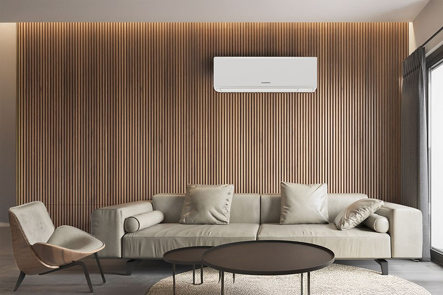
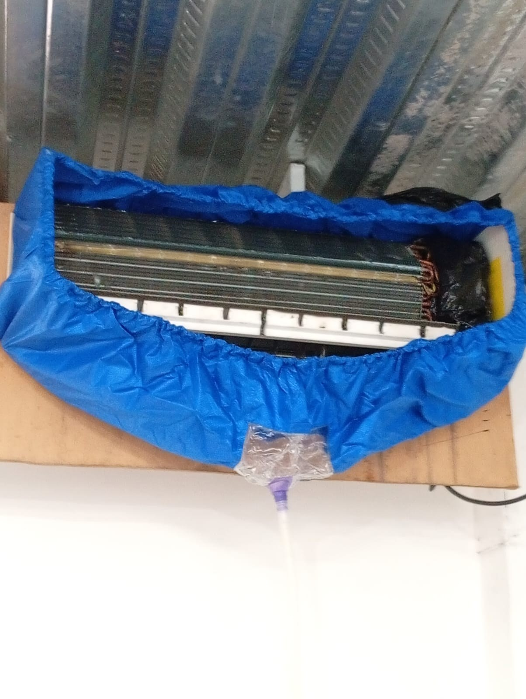
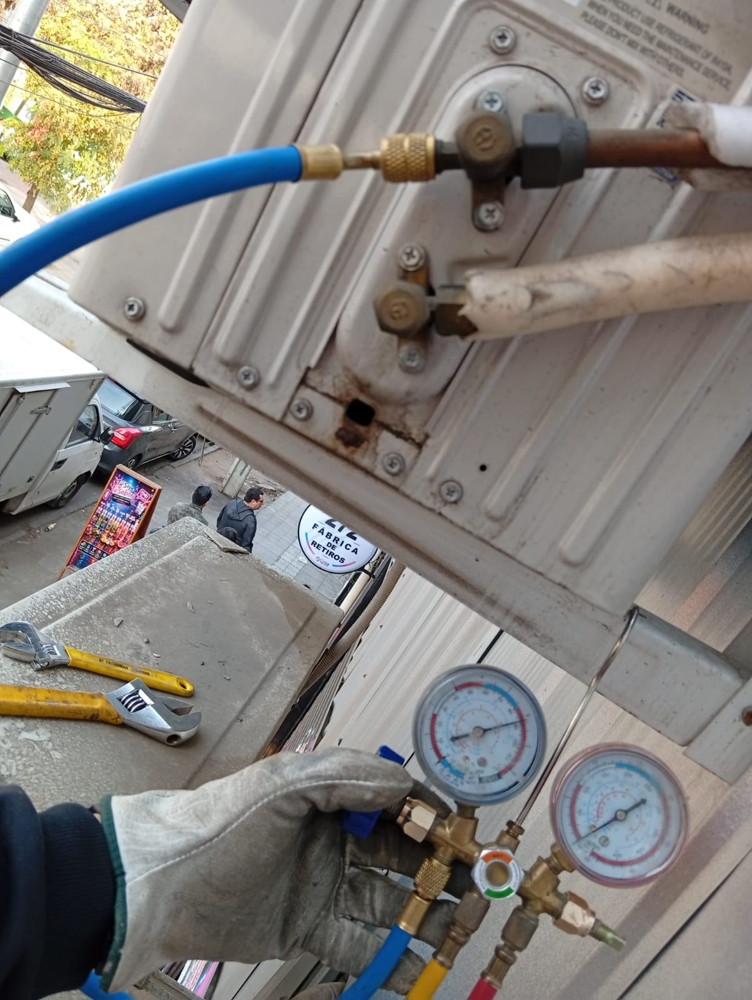
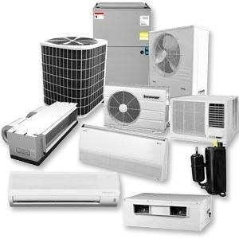

Confort durante todo el año
Temperaturas adecuadas para vivir, trabajar o atender clientes, según las condiciones de cada recinto y las prestaciones del equipo.
Instalación, mantenimiento y diagnóstico de aire acondicionado para hogares, oficinas, comercios y empresas. Buscamos confort, eficiencia y funcionamiento confiable.
Un sistema bien seleccionado e instalado ayuda a mantener una temperatura confortable y a utilizar la energía de manera más eficiente. El dimensionamiento, la ubicación y el mantenimiento influyen en el rendimiento del equipo.
Temperaturas adecuadas para vivir, trabajar o atender clientes, según las condiciones de cada recinto y las prestaciones del equipo.
Una selección de capacidad adecuada y el uso correcto del sistema pueden evitar consumos innecesarios. El ahorro real depende del equipo y su uso.
Las revisiones preventivas permiten detectar señales de desgaste o suciedad antes de que se conviertan en fallas mayores.
Filtros limpios, drenaje correcto, conexiones verificadas y una instalación apropiada ayudan a mantener el rendimiento esperado.
Cada proyecto comienza con una evaluación de las necesidades del cliente, las condiciones del recinto y las especificaciones del fabricante.

Montaje de unidades interiores y exteriores, canalización, tuberías frigoríficas, drenaje, conexiones y puesta en marcha, según el equipo y el proyecto.

Limpieza de filtros y serpentines, revisión de drenajes, conexiones y condiciones de funcionamiento para favorecer un desempeño estable.

Evaluación de fallas eléctricas, electrónicas, mecánicas o frigoríficas y propuesta de reparación según diagnóstico técnico.

Evaluación de sistemas split muro, cassette y otras configuraciones, de acuerdo con capacidad requerida, uso y características del lugar.
Cuéntanos qué tipo de recinto tienes, qué equipo utilizas y qué servicio necesitas. Te ayudaremos a evaluar una solución adecuada.